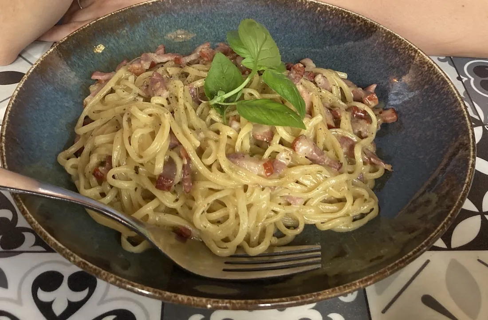
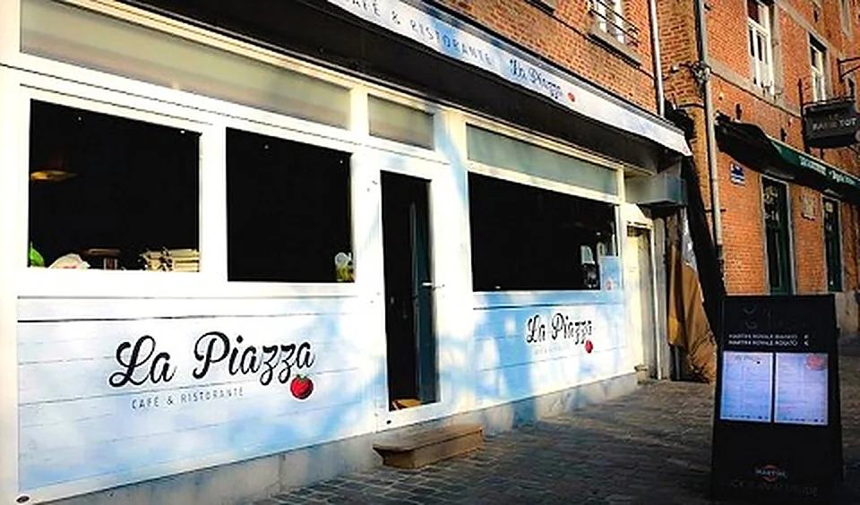
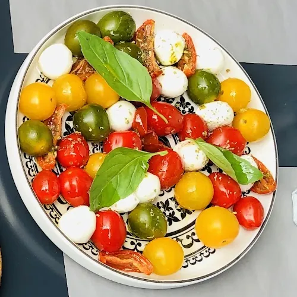
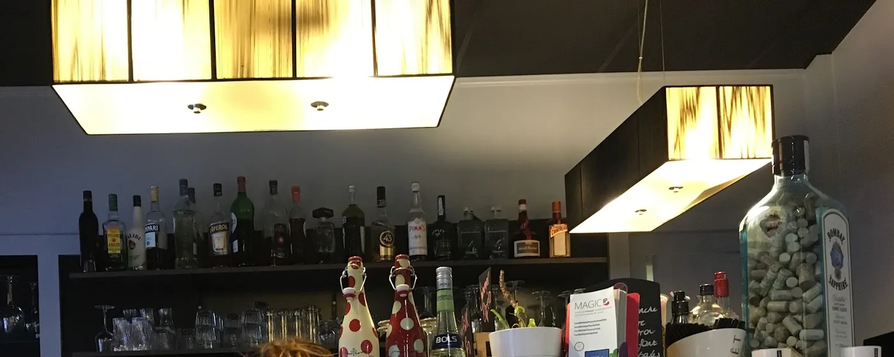
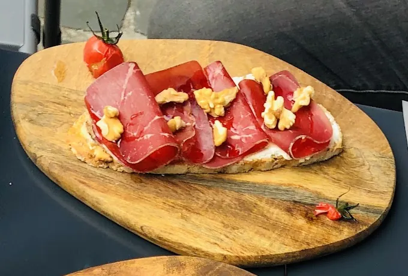
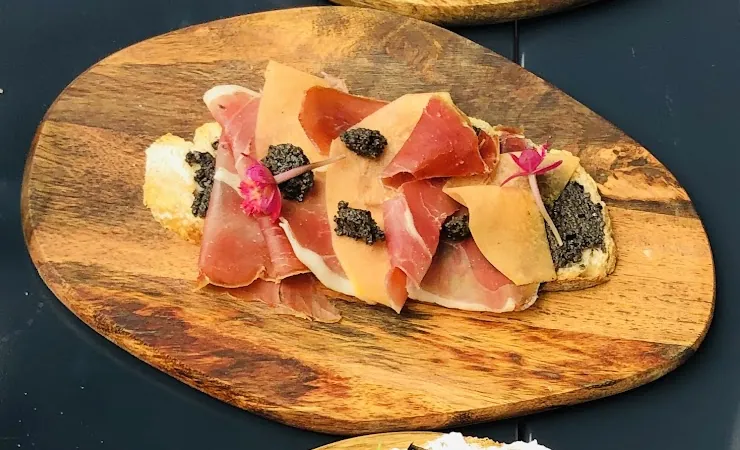
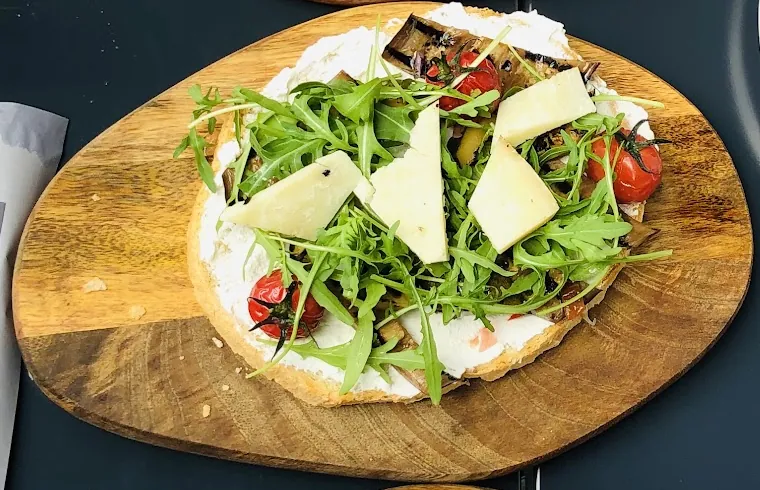
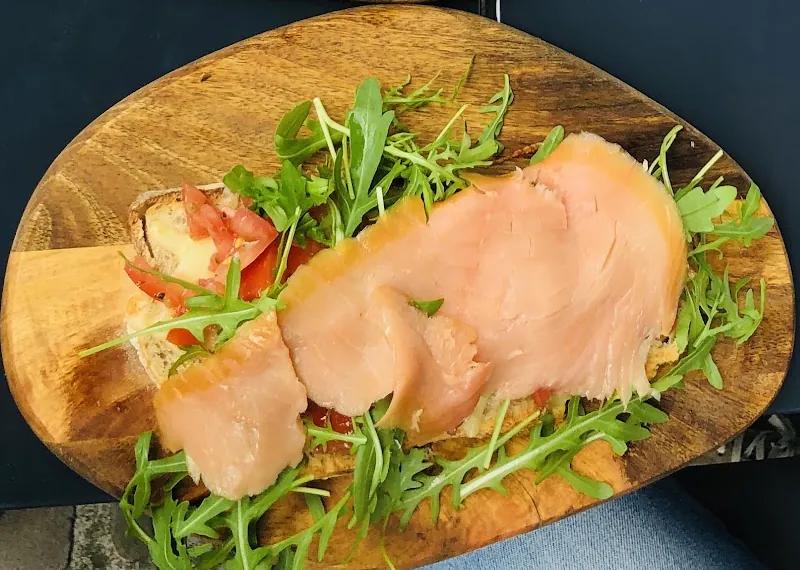
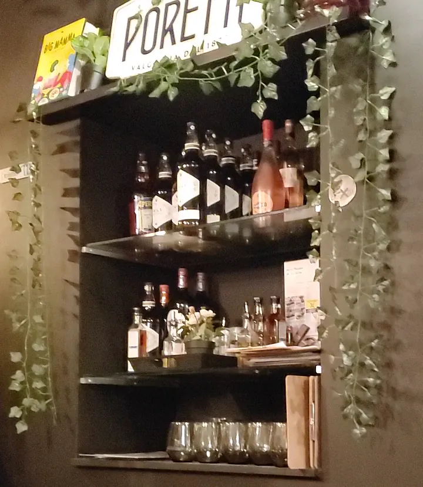

Café & ristorante · Namur
LaPiazza
Une cuisine d'inspiration italienne sur la place du Marché aux Légumes : pâtes fraîches, salades, antipasti.
Ouvert midi et soir, fermé le lundi



- Sur la place du vieux NamurPlace Marché aux Légumes 2-3, avec une terrasse qui donne sur la place.
- Pâtes fraîches, salades, antipastiUne carte d'inspiration italienne, de la salade au tiramisu.
- Midi, et le soir dès mercrediService de 12 h à 15 h, fermé le lundi.
Ce qui arrive sur la table
Des planches à partager, des assiettes colorées, une salle chaleureuse derrière le comptoir.





Une table sur la place
Le jour, l'heure et le nombre de couverts : trente secondes, et la table est demandée.
La place en parle

Au cœur du vieux Namur
La Piazza s'est installée sur la place du Marché aux Légumes, au cœur du vieux Namur. Une salle sobre et chaleureuse derrière les grandes vitres, et une terrasse sur la place quand le temps s'y prête.
On y vient pour une assiette de pâtes à midi, une planche à partager ou un repas du soir entre amis.
Horaires
| lundi | fermé |
|---|---|
| mardi | 12 h – 15 h |
| mercredi | 12 h – 14 h 30 18 h – 22 h |
| jeudi | 12 h – 14 h 30 18 h – 22 h 30 |
| vendredi | 12 h – 15 h 18 h – 23 h |
| samedi | 12 h – 15 h 18 h – 23 h |
| dimanche | 12 h – 15 h |
Place Marché aux Légumes 2-3, 5000 Namur